지적기사 (2018-04-28 기출문제)
1과목: 지적측량
1. 오차의 성질에 대한 설명 중 옳지 않은 것은?
- 값이 큰 오차일수록 발생확률도 높다.
- 우연오차는 확률법칙에 따라 전파된다.
- 숙련된 지적측량기술자도 착오는 일으킨다.
- 정오차는 측정회수를 거듭할수록 누적된다.
(정답률: 85%)

2. 지적삼각점측량에서 수평각을 5방향으로 구성하여 1대회 정측을 시리한 결과 출발차가 +20초, 폐색차가 +30초 발생하였다면, 제 3방향각에 각각 보정할 수는?
- 출발차: -4“, 폐색차: -2”
- 출발차: -20“, 폐색차: -2”
- 출발차: -4“, 폐색차: -20”
- 출발차: -20“, 폐색차: -18”
(정답률: 65%)
3. 평판측량방법에 따른 세부측량을 방사법으로 하는 경우 광파조준의를 사용할 때에는 1방향선의 도상길이를 최대 얼마 이하로 할 수 있는가?
- 10cm
- 15cm
- 20cm
- 30cm
(정답률: 69%)
4. 다음 그림에서 AP 거리를 구하는 식으로 옳은 것은?
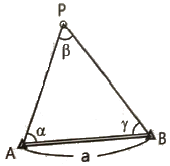
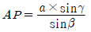
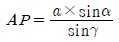
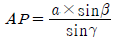
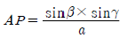
(정답률: 80%)
5. 평판측량방법에 의한 세부측량을 교회법으로 하는 경우 방향각의 교각에 대한 설명으로 옳은 것은?
- 10° 이상 130° 이하로 한다.
- 20° 이상 140° 이하로 한다.
- 30° 이상 150° 이하로 한다.
- 40° 이상 160° 이하로 한다.
(정답률: 92%)
6. 경위의측량방법에 의한 세부측량의 관측 및 계산에 대한 설명으로 옳지 않은 것은?
- 교회법에 따른다.
- 연직각의 관측은 정반으로 1회 관측한다.
- 관측은 20초독 이상의 경위의를 사용한다.
- 수평각의 관측은 1대회 방향관측법이나 2배각의 배각법에 따른다.
(정답률: 44%)
7. 지적측량에 사용하는 좌표의 원점 중 서부좌표계의 원점의 경위도는?
- 경도: 동경 123° 00′, 위도: 북위 38° 00′
- 경도: 동경 125° 00′, 위도: 북위 38° 00′
- 경도: 동경 127° 00′, 위도: 북위 38° 00′
- 경도: 동경 129° 00′, 위도: 북위 38° 00′
(정답률: 77%)
8. 도면에 등록하는 제도 폭이 다음의 순서대로 올바르게 짝지어진 것은?
- 0.1mm – 0.2mm – 04mm
- 0.1mm – 0.4mm – 02mm
- 0.1mm – 0.2mm – 02mm
- 0.1mm – 0.1mm – 02mm
(정답률: 70%)
9. 지적삼각점측량을 할 때 사용하고자 하는 삼각점의 변동 유무를 확인하는 기준은?
- 기지각과의 오차가 ± 30초 이내
- 기지각과의 오차가 ± 40초 이내
- 기지각과의 오차가 ± 50초 이내
- 기지각과의 오차가 ± 60초 이내
(정답률: 81%)
10. 3배각법에 의한 수평각 관측의 결과가 다음과 같을 때 수평각의 평균값은?
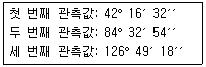
- 42° 16′ 22′′
- 42° 16′ 25′′
- 42° 16′ 26′′
- 42° 16′ 27′′
(정답률: 69%)
11. 지구를 평면으로 가정할 때 정도 1/106에서 거리오차는? (단, 지구의 곡률반경은 6370km이다.)
- 1.21 cm
- 2.21 cm
- 3.21 cm
- 4.21 cm
(정답률: 49%)
12. 배각법에 의한 지적도근점 측량 시 관측각에 대한 오차 계산으로 옳은 것은?(오류 신고가 접수된 문제입니다. 반드시 정답과 해설을 확인하시기 바랍니다.)
- 출발기지 방위각-관측각의 합+180° (측점수-1)
- 출발기지 방위각-관측각의 합+도착기지 방위각
- 출발기지 방위각+관측각의 합-180° 도착기지 방위각
- 출발기지 방위각+관측각의 합-도착기지 방위각
(정답률: 65%)
13. 평판측량에서 발생하 수 있는 오차가 아닌 것은?
- 시준오차
- 연결오차
- 외심오차
- 정준오차
(정답률: 64%)
14. 지적도근점측량을 다각망도선법에 의하여 시행할 경우에 대한 설명으로 옳은 것은?
- 2점 이상의 기지점을 연결하는 다각망 도선법에 의한다.
- 2점 이상의 기지점을 상호 연결하는 방식에 의한다.
- 3점 이상의 기지점을 상호 연결하는 방식에 의한다.
- 3점 이상의 기지점을 포함한 결합다각방식에 의한다.
(정답률: 81%)
15. 지적삼각보조점성과표에 기록·관리하영야 하는사항에 해당하지 않는 것은?
- 도면번호
- 시준점의 명칭
- 도선등급 및 도선명
- 소재지와 측량연월일
(정답률: 50%)
16. 좌표면적계산법으로 면적측정을 하는 경우 다음 내용의 ㉠과 ㉡에 들어갈 말로 옳은 것은?
- ㉠: 1/10m2, ㉡: 1m2
- ㉠: 1/100m2, ㉡: 1m2
- ㉠: 1/1000m2, ㉡: 1/10m2
- ㉠: 1/10000m2, ㉡: 1/10m2
(정답률: 86%)
17. 다음 그림의 삽입망 조정에서 삼각형 ABC로 이루어지는 산출 내각은? (단, r1=96°04′44′′, r2=68° 39′10′′ 이다.)
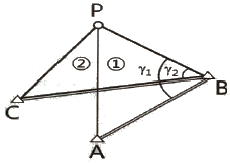
- 27° 25′ 34′′
- 68° 39′ 10′′
- 96° 04′ 44′′
- 164° 43′ 54′′
(정답률: 73%)
18. 평판측량방법에 따른 세부측량을 방사법으로 하는 경우 1방향선의 도상길이는 최대 얼마이하로 하여야 하는가? (단, 광파조준의 또는 광차측거기를 사용하는 경우는 고려하지 않는다.)
- 5cm
- 10cm
- 20cm
- 30cm
(정답률: 65%)
19. 지적측량의 방법으로 옳지 않은 것은?
- 수준측량방법
- 경위의측량방법
- 사진측량방법
- 위성측량방법
(정답률: 63%)
20. 교회법에 따른 지적삼각보조점의 관측 및 계산 기준으로 옳은 것은?(오류 신고가 접수된 문제입니다. 반드시 정답과 해설을 확인하시기 바랍니다.)
- 3배각법에 따른다.
- 3대회의 방향관측법에 따른다.
- 1방향각의 측각공차는 50초 이내로 한다.
- 관측은 20초독 이상의 경위의를 사용한다.
(정답률: 69%)
2과목: 응용측량
21. A, B 두 개의 수준점에서 P점을 관측한 결과가 표와 같을 때 P점의 최확값은?
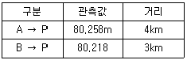
- 80.235m
- 80.238m
- 80.240m
- 80.258m
(정답률: 67%)
22. 터널측량의 작업 순서 중 선정한 중심선을 현지에 정확히 설치하여 터널의 입구나 수직 터널의 위치를 결정하는 단계는?
- 답사
- 예측
- 지표설치
- 지하설치
(정답률: 74%)
23. 사진 렌즈의 중심으로부터 지상 촬영 기준면에 내린 수선이 사진면과 교차하는 점에 대한 설명으로 옳은 것은?
- 사진의 경사각에 관계없이 이 점에서 수직사진의 축척과 같은 축척이 된다.
- 지표면에 기복이 있는 경우 사진 상에는 이 점을 중심으로 방사상의 변휘가 발생하게 된다.
- 사진 상에 나타난 점과 그와 대응되는 실제 점의 상관성을 해석하기 위한 점이다.
- 항공사진에서는 마주 보는 지표의 대각선이 서로 만나는 교점이 이 점의 위치가 된다.
(정답률: 57%)
24. 완화곡선에 대한 설명으로 옳은 것은?
- 완화곡선의 반지름은 종점에서 무한대가 된다.
- 완화곡선의 접선은 시점에서 원호에 접한다.
- 완화곡선의 원곡선과 원곡선 사이에 위치하는 곡선을 의미한다.
- 완화곡선에서 곡선 반지름의 감소율은 켄트의 증가율과 같다.
(정답률: 75%)
25. 지형도 작성 시 점고법(spot height system)이 주로 이용되는 곳으로 거리가 먼 것은?
- 호안
- 항만의 심천
- 하천의 수심
- 지형의 등고
(정답률: 55%)
26. 그림과 같은 등고선에서 AB의 수평거리가 60m일 때 경사도(incline)로 옳은 것은?
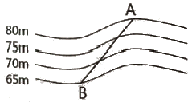
- 10%
- 15%
- 20%
- 25%
(정답률: 72%)
27. 터널공사에서 터널 내 측량에 주로 사용되는 방법으로 연결된 것은?
- 삼각측량 - 평판측량
- 평판측량 - 트래버스측량
- 트래버스측량 – 수준측량
- 수준측량 - 삼각측량
(정답률: 78%)
28. GNSS 측량에서 의사거리(pseudo-range)에 대한 설명으로 옳지 않은 것은?
- 인공위성과 지상수신기 사이의 거리 측정값이다.
- 대류권과 이온층의 신호지연으로 인한 오차의 영향력이 제거된 관측값이다.
- 기하하적인 실제거리와 달라 의사거리라 부른다.
- 인공위성에서 송신되어 수신기로 도착된 신호의 송신시간을 PRN 인식 코드로 비교하여 측정한다.
(정답률: 63%)
29. 우리나라의 일반철도에 주로 이용되는 완화곡선은?
- 클로소이드 곡선
- 3차 포물선
- 2차 포물선
- sin 곡선
(정답률: 59%)
30. 항공사진측량으로 촬영된 사진에서 높이가 250m인 건물의 변위가 16mm이고, 건물의 정상부분에서 연직점까지의 거리가 48mm이었다. 이 사진에서 어느 굴뚝의 변위가 9mm이고, 굴뚝의 정상부분이 연직점으로부터 72mm 떨어져 있었다면 이 굴뚝의 높이는?
- 90m
- 94m
- 100m
- 92m
(정답률: 54%)
31. 다음 원격탐사에 사용되는 전자스펙트럼 중에서 가장 파장이 긴 것은?
- 가시광선
- 열적외선
- 근적외선
- 자외선
(정답률: 59%)
32. 교각 55° , 곡선반지름 285m인 단곡선이 설치된 도로의 기점에서 교점(I.P.)까지의 추가거리가 423.87 m 일 때, 시단현의 편각은? (단, 말뚝간의 중심거리는 20m 이다.)
- 0° 11′ 24′′
- 0° 27′ ⑤′′
- 1° 45′ 16′′
- 1° 45′ 20′′
(정답률: 48%)
33. 그림과 같은 수준망에서 폐합 수준측량을 한 결과, 표와 같은 관측오차를 얻었다. 이중 관측 정확도가 가장 낮은 것으로 추정되는 구간은?
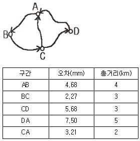
- AB구간
- AC구간
- CA구간
- DA구간
(정답률: 55%)
34. 지형도 작성을 위한 측량에서 해안선의 기준이 되는 높이기준면은?
- 측정 다시 정수면
- 평균해수면
- 약최저저조면
- 약최고고조면
(정답률: 64%)
35. AB, BC의 경사 거리를 측정하여 AB=21.562m, BC-28.064m를 얻었다. 레벨을 설치하여 A, B, C의 표척을 읽은 결과가 글미과 같을 때 AC의 수평거리는? (단, AB, BC 구간은 각각 등경사로 가정한다.)
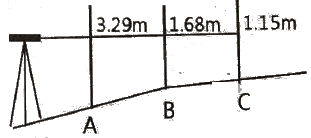
- 49.6m
- 50.1m
- 59.6m
- 60.1m
(정답률: 60%)
36. GPS 신호 중에서 P-code의 특징이 아닌 것은?
- 주파수가 10.23 MHz이다.
- 파장이 30m이다.
- 허가된 사용자만 이용할 수 있다.
- 주기가 1ms(millisecond)로 매우 짧다.
(정답률: 54%)
37. 다음 중 지상(공산)해상도가 가장 좋은 영상을 얻을 수 있는 위성은?
- SPOT
- LANDSAT
- IKONOS
- KOMPASAT-1
(정답률: 59%)
38. 등경사면 위의 A, B점에서 A점의 표고 180m, B점의 표고 60m, AB의 수평거리 200m일 때, A점 및 B점 사이에 위치하는 표고 150m인 등고선까지의 B점으로부터 수평거리는?
- 50m
- 100m
- 150m
- 200m
(정답률: 67%)
39. 도로의 개설을 위하여 편입되는 대상용지와 경계를 정하는 측량으로서 설계가 완료된 이후에 수행할 수 있는 노선측량 단계는?
- 용지 측량
- 다각 측량
- 공사 측량
- 조사 측량
(정답률: 60%)
40. 사진의 크긱가 23cmx23cm인 카메라로 평탄한 지역을 비행고도 2000m에서 촬영하여 촬영면적이 21.16km2 인 연직사진을 얻었다. 이 카메라의 초점거리는?
- 10cm
- 27cm
- 25cm
- 20cm
(정답률: 52%)
3과목: 토지정보체계론
41. 지적측량성과작성시스템에서 지적측량접수프로그램을 이용하여 작성된 측량성과 검사요청서 파일 포맷 형식으로 옳은 것은?
- *.jsg
- *.srf
- *.sif
- *.cif
(정답률: 50%)
42. 다음 중 기존 공간 사상의 위치, 모양, 방향등에 기초하여 공간 형상의 둘레에 특정한 폭을 가진 구역을 구축하는 공간분석 기법은?
- Buffer
- Dissolve
- Interpolation
- Classification
(정답률: 81%)
43. 다음 중 공간데이터 관련 표준화와 관련이 없는 것은?
- IDW
- SDTS
- CEN/TC
- ISO/TC 211
(정답률: 59%)
44. 부동산종합공부시스템에 대한 정상적인 운용상태에 대한 지적소관청의 점검 시기로 옳은 것은?
- 매월
- 매주
- 매일
- 수시
(정답률: 58%)
45. 토지정보시스템(LIS)에 관한 설명으로 옳은 것은?
- 토지개발에 따른 투기형상을 방지하는데 주목적을 두고 있다.
- 토지와 관련된 공간정보를 수집, 저장, 처리, 관리하기 위한 시스템이다.
- 도시기반 시설에 관한 자료를 저장하여 효율적으로 관리하는 시스템이다.
- 토지와 관련된 등록부와 도면작성을 위한 도해지적공부의 확보를 위한 것이다.
(정답률: 76%)
46. 다음 중 토지정보시스템에 관한 설명으로 옳지 않은 것은?
- 데이터에 대한 내용, 품질, 사용조건 등을 기술하고 있다.
- 구축된 토지정보는 토지등기, 평가, 과세, 거래의 기초자료로 활용된다.
- 토지 부동산정보관리체계 및 다목적 지적정보체계 구축에 활용될 수 있다.
- 지적도를 기반으로 토지와 관련된 공간정보를 수집·처리·저장·관리하기 위한 정보체계이다.
(정답률: 51%)
47. 국가나 지방자치단체가 지적전산자료를 이용하는 경우 사용료의 납부방법으로 옳은 것은?
- 사용료를 면제한다.
- 사용료를 수입증지로 납부한다.
- 사용료를 수입인지로 납부한다.
- 규정된 사용료의 절반을 현금으로 납부한다.
(정답률: 72%)
48. 다음 중 대표적인 벡터 자료 파일 형식이 아닌 것은?
- TIFF파일 포맷
- CAD파일 포맷
- Shape파일 포맷
- Coverage파일 포맷
(정답률: 70%)
49. 다음 중 스캐닝을 통해 자료를 구축할 때 해상도를 표현하는 단위에 해당하는 것은?
- PPM
- DPI
- DOT
- BPS
(정답률: 68%)
50. 지적공부에 관한 전산자료의 관리에 관한 내용으로 옳지 않은 것은?
- 지적공부에 관한 전산자료가 최신 정보에 맞도록 수시로 갱신하여야 한다.
- 국토교통부장관은 지적전산자료에 오류가 있다고 판단되는 경우에는 지적소관청에 자료의 수정·보완을 요청할 수 있다.
- 지적소관청은 요청 받은 자료의 수정·보완 내용을 확인하여 지체 없이 바로잡은 후 국토교통부장관에게 그 결과를 보고하여야 한다.
- 국토교통부장관은 표준지공시지가 및 개별공시지가에 관한 지가전산자료를 개별공시지가가 확정된 후 6개월 이내에 정리하여야 한다.
(정답률: 63%)
51. 전산으로 접수된 지적공부정리신청서의 검토사항에 해당되지 않는 것은?
- 첨부된 서류의 적정여부
- 신청인과 소유자의 일치여부
- 지적측량성과자료의 적정여부
- 신청사항과 지적전산자료의 일치여부
(정답률: 62%)
52. 관계형 데이터베이스관리시스템에서 자료를 만들고 조회할 수 있는 도구는?
- ASP
- JAVA
- Perl
- SQL
(정답률: 74%)
53. 필지 식별 번호에 대한 설명으로 틀린 것은?
- 각 필지에 부여하며 가변성이 있는 번호다.
- 필지에 관련된 자료의 공통적인 색인번호 역할을 한다.
- 필지별 대장의 등록사항과 도면의 등록사항을 연결하는 기능을 한다.
- 각 필지별 등록 사항의 저장과 수정 등을 용이하게 처리할 수 있는 고유번호다.
(정답률: 72%)
54. 데이터 처리 시 대상물이 두 개의 유사한 색조나 색깔을 가지고 있는 경우 소프트웨어적으로 구별하기 어려워서 발생되는 오류는?
- 선의 단절
- 방향의 혼돈
- 불분명한 경계
- 주기와 대상물의 혼돈
(정답률: 68%)
55. 지적도 전산화 작업으로 구축된 도면의 데이터별 레이어 번호로 옳지 않은 것은?
- 지번 : 10
- 지목 : 11
- 문자정보 : 12
- 필지경계선 : 1
(정답률: 56%)
56. 지적도면을 디지타이징한 결과 교차점을 만나지 못하고 선이 끝나는 오류는?
- Spike
- Overshoot
- Undershoot
- Sliver polygon
(정답률: 79%)
57. 다음 중 한국토지정보시스템(KLIS)의 구성시스템이 아닌 것은?
- DB변환관리시스템
- 지적측량접수시스템
- 지적공부관리시스템
- 토지행정지원시스템
(정답률: 49%)
58. 다음 중 지적도면의 수치 파일화 공정순서로 옳은 것은?
- 지적도면입력 → 폴리곤 형성 → 좌표 및 속성검사 → 도면신축보정
- 지적도면입력 → 폴리곤 형성 → 도면신축보정 → 좌표 및 속성검사
- 지적도면입력 → 도면신축보정 → 폴리곤 형성 → 좌표 및 속성검사
- 지적도면입력 → 좌표 및 속성검사 → 도면신축보정→ 폴리곤 형성
(정답률: 61%)
59. 3차원 지적정보를 구축할 때, 지상 건축물의 권리관계 등록과 가장 밀접한 관련성을 가지는 도형정보는?
- 수치지도
- 층별권원도
- 토지피복도
- 토지이용계획도
(정답률: 69%)
60. 부동산종합공부시스템의 전산장비의 정기정검 주기로 옳은 것은?
- 일 1회 이상
- 주 1회 이상
- 월 1회 이상
- 연 1회 이상
(정답률: 73%)
4과목: 지적학
61. 수치지적과 도해지적에 관한 설명으로 옳지 않은 것은?
- 수치지적은 비교적 비용이 저렴하고 고도의 기술을 요구하지 않는다.
- 수치지적은 도해지적보다 정밀하게 경계를 표시할 수 있다.
- 도해지적은 대상 필지의 형태를 시각적으로 용이하게 파악할 수 있다.
- 도해지적은 토지의 경계를 도면에 일정한 축척의 그림으로 그리는 것이다.
(정답률: 73%)
62. 역토의 종류에 해당되지 않는 것은?
- 마전
- 국둔전
- 장전
- 급주전
(정답률: 56%)
63. 다음 중 신라시대 구장산술에 따른 전(田)의 형태별 측량 내용으로 옳지 않은 것은?
- 방전(方田) - 정사각형의 토지로, 장(長)과 광(廣)을 측량한다.
- 규전(圭田) - 이등변삼각형의 토지로, 장(長)과 광(廣)을 측량한다.
- 제전(悌田) - 사다리꼴의 토지로, 장(長)과 동활(東闊)·서활(西闊)을 측량한다.
- 환전(環田) - 원형의 토지로, 주(周)와 경(經)을 측량한다.
(정답률: 66%)
64. 지역선에 대한 설명으로 옳지 않은 것은?
- 임야조사사업 당시의 사정선
- 시행지와 미시행지와의 지계선
- 소유자가 동일한 토지와의 구획선
- 소유자를 알 수 없는 토지와의 구획선
(정답률: 54%)
65. 동일한 지번부여지역 내에서 최종 지번이 1075이고, 지번이 545인 필지를 분할하여 1076, 1077로 표시하는 것과 같은 부번 방식은?
- 기번식 지번제도
- 분수식 지번제도
- 사행식 지번제도
- 자유식 지번제도
(정답률: 63%)
66. 경계 결정 시 경계불가분의 원칙이 적용되는 이유로 옳지 않은 것은?
- 필지 간 경계는 1개만 존재한다.
- 경계는 인접 토지에 공통으로 작용한다.
- 실지 경계 구조물의 소유권을 인정하지 않는다.
- 경계는 폭이 없는 기하학적인 선의 의미와 동일하다.
(정답률: 71%)
67. 다음 설명에 해당하는 학자는?
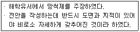
- 이기
- 서유구
- 유진억
- 정약용
(정답률: 81%)
68. 토지조사사업의 목적으로 옳지 않은 것은?
- 부동산 표시에 반드시 필요한 지번 창설
- 국유지 조사로 조선총독부의 소유 토지확보
- 지세 수입을 증대하기 위한 조세수입체제의 확립
- 일본인의 토지 점유를 합법화하여 보장하는 법률적 제도의 확립
(정답률: 65%)
69. 나라별 지적제도에 대한 설명으로 옳지 않은 것은?
- 대만: 일본의 식민지시대에 지적제도가 창설되었다.
- 스위스: 적극적 권리의 지적체계를 가지고 있다.
- 독일: 최초의 지적조사는 1811년에 착수, 1832년에 확립하였다.
- 프랑스: 근대지적의 시초인 나폴레옹 지적으로서 과세지적의 대표이다.
(정답률: 47%)
70. 지적재조사사업의 목적으로 옳지 않은 것은?
- 경계복원능력의 향상
- 지적불부합지의 해소
- 토지거래질서의 확립
- 능률적인 지적관리체제 개선
(정답률: 60%)
71. 토지의 개별성·독립성을 인정하여 물권객체로 설정할 수 있도록 다른 토지와 구별되게 한 토지표시 사항은?
- 지번
- 지목
- 면접
- 개별공시지가
(정답률: 82%)
72. 다음 중 입안제도(立案制度)에 대한 설명으로 옳지 않은 것은?
- 토지매매계약서이다.
- 관에서 교부하는 형식이었다.
- 조선 후기에는 백문매매가 성행하였다.
- 소유권 이전 후 100일 이내에 신청하였다.
(정답률: 60%)
73. 중앙지적위원회와 지방지적위원회의 위원구성 및 운영에 필요한 사항은 무엇으로 정하는가?
- 대통령령
- 국토교통부령
- 행정안전부령
- 한국국토정보공사령
(정답률: 47%)
74. 우리나라의 현행 지번 설정에 대한 원칙으로 옳지 않은 것은?
- 북서기번의 원칙
- 부번(副番)의 원칙
- 종서(從書)의 원칙
- 아라비아숫자 지번의 원칙
(정답률: 68%)
75. 다음 지적의 3요소 중 협의의 개념에 해당하지 않는 것은?
- 공부
- 등록
- 토지
- 필지
(정답률: 57%)
76. 토지조사령은 그 본래의 목적이 일제가 우리나라의 민심수습과 토지수탈의 목적으로 제정되었다고 볼 수 있다. 토지조사령은 토지에 대한 과세에 큰 비중을 두었으며, 토지조사는 세가지 분야에 걸쳐 시행되었다. 다음 중 토지조사에 해당되지 않는 것은?
- 지가조사
- 소유권조사
- 지(형)모조사
- 측량성과조사
(정답률: 75%)
77. 다음 중 토지등록의 원칙에 대한 설명으로 옳지 않은 것은?
- 지적국정주의: 지적공부의 등록사항인 토지표시사항을 국가가 결정하는 원칙이다.
- 물적편성주의: 권리의 주체인 토지소유자를 중심으로 지적공부를 편성한다는 원칙이다.
- 의무등록주의: 토지의 표시를 새로이 정하거나 변경 또는 말소하는 경우 의무적으로 소관청에 토지이동을 신청하여야 한다.
- 직권등록주의: 지적공부에 등록할 토지표지사항은 소관청이 직권으로 조사·측량하여 지적공부에 등록한다는 원칙이다.
(정답률: 74%)
78. 지적의 토지표시사항의 특성으로 볼 수 없는 것은?
- 정확성
- 다양성
- 통일성
- 단순성
(정답률: 69%)
79. 대한제국시대에 삼림법에 의거하여 작성한 민유산야약도에 대한 설명으로 옳은 않은 것은?
- 민유산야약도의 경우에는 지번을 기재하지 않았다.
- 최초로 임야측량이 실시되었다는 점에서 중요한 의미가 있다.
- 민유임야측량은 조직과 계획 없이 개인별로 시행되었고 일정한 수수료도 없었다.
- 토지 등급을 상세하게 정리하여 세금을 공평하게 징수할 수 있도록 작성된 도면이다.
(정답률: 51%)
80. 고도의 정확성을 가진 지적측량을 요구하지는 않으나 과세표준을 위한 면적과 토지 전체에 대한 목록의 작성이 중요한 지적제도는?
- 법지적
- 세지적
- 경제지적
- 소유지적
(정답률: 77%)
5과목: 지적관계법규
81. 국토의 계획 및 이용에 관한 법상 용도지역 중 농림지역의 건폐율은?
- 20% 이하
- 30% 이하
- 50% 이하
- 70% 이하
(정답률: 62%)
82. 다음 중 지적공부에 등록하는 토지의 표시가 아닌 것은?
- 소유자
- 지번과 지목
- 토지의 소재
- 경계 또는 좌표
(정답률: 57%)
83. 공간정보의 구축 및 관리 등에 관한 법령상 임야도의 축척으로 옳은 것은?
- 1/1200
- 1/2400
- 1/5000
- 1/6000
(정답률: 78%)
84. 공간정보의 구축 및 관리 등에 관한 법령상 축척변경 승인을 받았을 때 시행공고를 하여야 하는 사항이 아닌 것은?
- 축척변경의 시행지역
- 축척변경의 시행에 관한 세부계획
- 축척변경의 시행에 따른 청산방법
- 축척변경의 시행에 관한 사업시행자
(정답률: 59%)
85. 지적전산자료를 인쇄물로 제공할 경우 1필지당 수수료로 옳은 것은?
- 10원
- 20원
- 30원
- 40원
(정답률: 74%)
86. 지적측량 시행규칙상 지적소관청이 지적삼각 보조점성과표 및 지적도근점성과표에 기록·관리하여야 하는 사항에 해당하지 않는 것은?
- 표지의 재질
- 직각좌표계 원점명
- 소재지와 측량연월일
- 지적위성기준점의 명칭
(정답률: 46%)
87. 공간정보의 구축 및 관리 등에 관한 법상 1년이하의 징역 또는 1천만원 이하의 벌금대상으로 옳은 것은?
- 정당한 사유 없이 측량을 방해한 자
- 측량업 등록사항의 변경신고를 하지 아니한자
- 무단으로 측량성과 또는 측량기록을 복제한자
- 고시된 측량성과에 어긋나는 측량성과를 사용한 자
(정답률: 51%)
88. 공간정보의 구축 및 관리 등에 관한 법상 행정구역의 명칭변경 시 지적공부에 등록된 토지의 소재는 어떻게 되는가?
- 등기소에 변경등기함으로써 변경된다.
- 소관청장이 변경정리함으로써 변경된다.
- 새로운 행정구역의 명칭으로 변경된 것으로 본다.
- 행정안전부장관의 승인을 받아야 변경된 것으로 본다.
(정답률: 57%)
89. 다음 중 지목변경에 해당하는 것은?
- 밭을 집터로 만드는 행위
- 밭의 흙을 파서 논으로 만드는 행위
- 산을 절토(切土)ㅎ하여 대(垈)로 만드는 행위
- 지적공부상의 전(田)을 대(垈)로 변경하는 행위
(정답률: 77%)
90. 공간정보의 구축 및 관리 등에 관한 법령상 지적측량수행자의 손해배상책임을 보장하기 위한 보증설정에 관한 설명으로 옳은 것은?
- 지적측량업자가 보증보험에 가입하여야 하는 보증금액은 5천만원 이상이다.
- 한국구토정보공사가 보증보험에 가입하여야 하는 보증금액은 20억원 이상이다.
- 지적측량업자가 보증설정을 하였을 때에는 이를 증명하는 서류를 국토교통부장관에게 제출하여야 한다.
- 지적측량업자는 지적측량업 등록증을 발급받은 날부터 30일 이내에 보증설정을 하여야한다.
(정답률: 79%)
91. 공간정보의 구축 및 관리 등에 관한 법상 규정된 지목의 종류로 옳지 않은 것은?
- 운동장
- 유원지
- 잡종지
- 철도용지
(정답률: 76%)
92. 지적도의 축척이 600분의 1인 지역에서 분할을 위한 지적측량수행 시 1필지 면적측정 결과가 0.01m2인 경우 토지대장 등록을 위한 결정면적은?
- 0.01m2
- 0.⑤m2
- 0.1m2
- 1m2
(정답률: 65%)
93. 국토의 계획 및 이용에 관한 법상 보호지구로 지정하여 보호하는 시설로 옳지 않은 것은?
- 공항
- 항만
- 문화재
- 녹지지역
(정답률: 53%)
94. 국토의 계획 및 이용에 관한 법상 용어의 정의로 옳지 않은 것은?
- ″도시·군계획사업″이란 도시·군관리계획을 시행하기 위한 도시·군계획시설사업,「도시개발법」에 따른 도시개발사업, 「도시 및 주거환경정비법」에 따른 정비사업을 말한다.
- ″용도지역″이란 토지의 이용 및 건축물의 용도·건폐율·용적률·높이 등에 대한 용도지역의 제한을 강화하거나 완화하여 적용함으로써 용도지역의 기능을 증진시키고 미관·경관·안전 등을 도모하기 위하여 도시·군관리계획을 결정하는지역을 말한다.
- ″지구단위계획″이란 도시·군계획 수립 대상지역의 일부에 대하여 토지의 이용을 합리화하고 그 기능을 증진시키며 미관을 개선하고 양호한 환경을 확보하며 그 지역을 체계적·계획적으로 관리하기 위하여 수립하는 도시·군관리계획을 말한다.
- ″용도구역″이란 토지의 이용 및 건축물의 용도·건폐율·용적률·높이 등에 대한 용도지역 및 용도지구의 제한을 강화하거나 완화하여 따로 정함으로써 시가지의 무질서한 확산방지, 계획적이고 단계적인 토지이용의 도모, 토지이용의 종합적 조정·관리 등을 위하여 도시·군 관리계획을 결정하는 지역을 말한다.
(정답률: 53%)
95. 공간정보의 구축 및 관리 등에 관한 법상 지적측량 적부심사청구 사안에 대한 시·도지사의 조사사항이 아닌 것은?
- 지적측량 기준점 설치연혁
- 다툼이 되는 지적측량의 경위 및 그 성과
- 해당 토지에 대한 토지이동 및 소유권 변동 연혁
- 해당 토지 주변의 측량기준점, 경계, 주요 구조물 등 현황 실측도
(정답률: 50%)
96. 공간정보의 구축 및 관리 등에 관한 법상 지적측량 및 토지 이동 조사를 위한 타인의 토지에 출입하거나 일시 사용하는 경우에 대한 설명으로 옳지 않은 것은?
- 타인의 토지에 출입하려는 자는 관할 특별자치시장, 특별자치도지사, 시장·군수 또는 구청장의 허가를 받아야 한다.
- 타인의 토지에 출입하려는 자는 소유자·점유자 또는 관리인의 동의 없이 장애물을 변경 또는 제거 할 수 있다.
- 토지의 점유자는 정당한 사유 없이 지적측량 및 토지이동 조사에 필요한 행위를 방해하거나 거부하지 못한다.
- 지적측량 및 토지이동 조사에 필요한 행위를 하려는 자는 그 권한을 표시하는 허가증을 지니고 관계인에게 이를 내보여야 한다.
(정답률: 82%)
97. 지적측량 적부심사 의결서를 받은 자가 지방지적위원회의 의결에 불복하는 경우에는 그의결서를 받은 날부터 며칠 이내에 국토교통부장관을 거쳐 중앙지적위원회에 재심사를 청구할 수 있는가?
- 7일 이내
- 30일 이내
- 60일 이내
- 90일 이내
(정답률: 34%)
98. 부동산등기법상 미등기 토지의 소유권 보존등기를 신청할 수 없는 자는?
- 확정판결에 의하여 자기의 소유권을 증명하는 자
- 수용(收用)으로 인하여 소유권을 취득하였음을 증명하는 자
- 토지대장등본에 의하여 피상속인이 토지대장에 소유자로서 등록되어 있는 것을 증명하는 자
- 특별자치도지사, 시장, 군수 또는 구청장의 확인에 의하여 자기의 소유권을 증명하는자(건물의 경우로 한정한다.)
(정답률: 31%)
99. 부동산등기법상 부동산 등기용 등록번호 부여절차로 옳지 않은 것은?
- 법인의 등록번호는 주된 사무소 소재지 관할 등기소의 등기관이 부여한다.
- 법인 아닌 사단이나 재단의 등록번호는 시장, 군수 또는 구청장이 부여한다.
- 국가·지방자치단체·국제기관 및 외국정부의 등록 번호는 기획재정부장관이 지정·고시한다.
- 주민등록번호가 없는 재외국민의 등록번호는 대법원 소재지 관할 등기소의 등기관이 부여한다.
(정답률: 61%)
100. 지적측량 시행규칙상 지적기준점표지의 설치·관리로서 옳지 않은 것은?
- 지적소관청은 연 1회 이상 지적기준점표지의 이상 유무를 조사하여야 한다.
- 지적삼각점표지의 점간거리는 평균 3킬로미터 이상 6킬로미터 이하로 하야 한다.
- 지적삼각보조점표지의 점간거리는 평균 1킬로미터 이상 3킬로미터 이하로 하여야 한다.
- 다각망도선법에 따르는 경우 지적도근점 표지의 점간거리는 평균 500미터 이하로 하여야 한다.
(정답률: 80%)
예를 들어, 어떤 측정값이 정확한 값으로부터 1%만큼 벗어났다면, 이 오차의 발생확률은 그리 높지 않을 것이다. 하지만 같은 측정값이 정확한 값으로부터 50%나 100%나 더 벗어났다면, 이 오차의 발생확률은 매우 높을 것이다.
따라서, 오차의 크기와 발생확률은 서로 독립적인 요소이며, 오차의 크기가 커지면 발생확률이 높아진다는 보장은 없다.